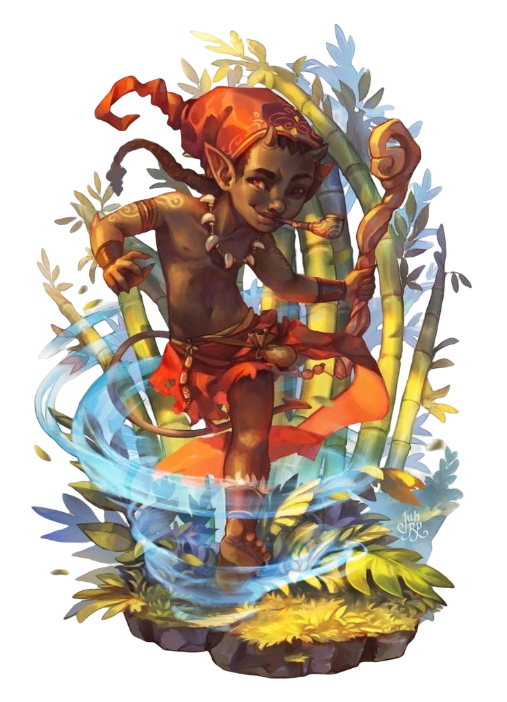
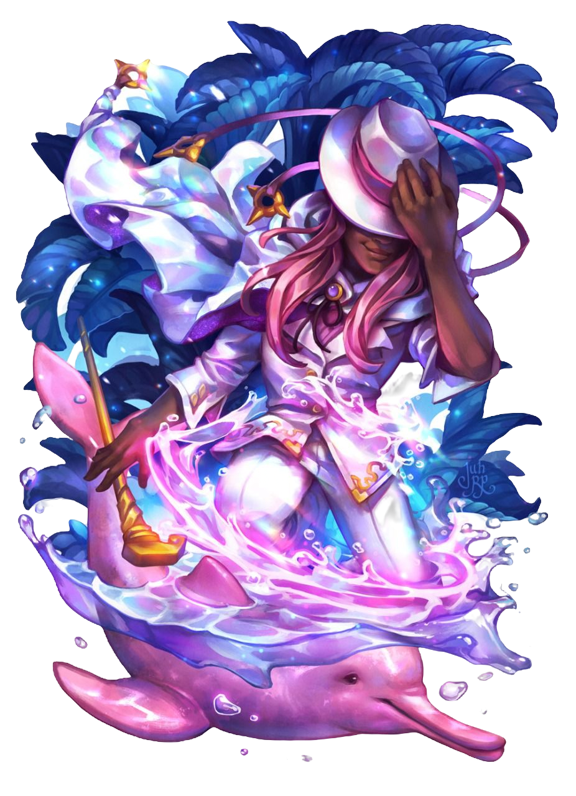
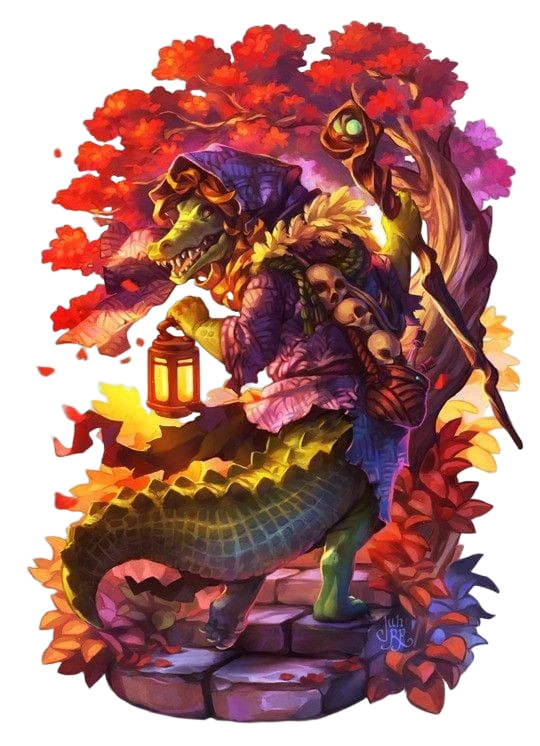
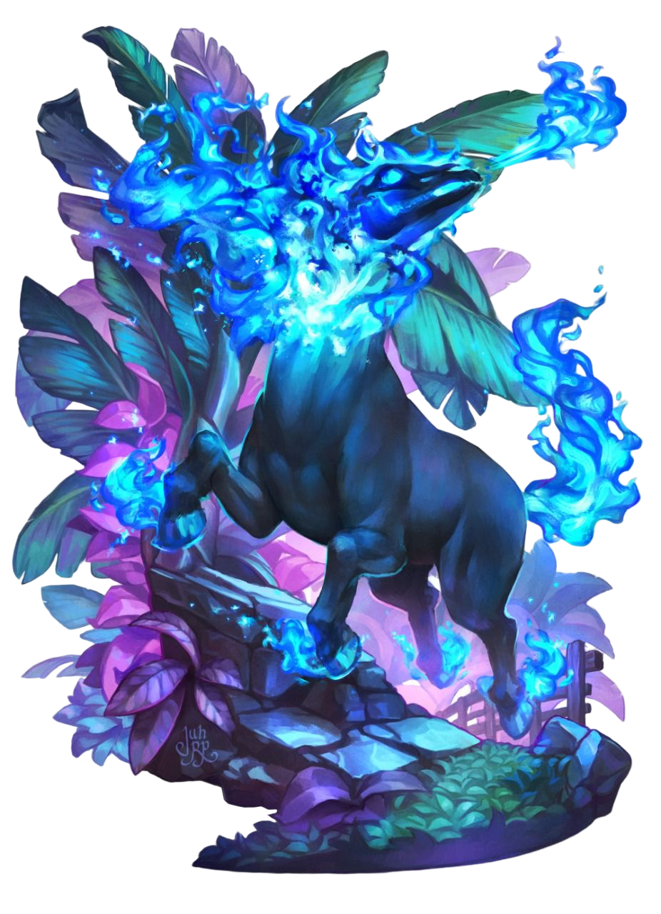

-
Saci Perére
HP 550
Descrição
A lenda do Saci, ele é um ser baixinho, negro e possui apenas uma perna – por isso se locomove pulando rapidamente pela floresta. Outra característica marcante é o seu capuz vermelho. O Saci é muito brincalhão, agitado e travesso. Por isso ele está sempre realizando travessuras por onde passa
-
Boto-Cor-de-Rosa
HP 300
Descrição
Um boto que se transforma em um homem belo e sedutor. Na forma humana, o boto seduz mulheres para engravidá-las. Essas mulheres são abandonadas pelo ser, que retorna para o rio em sua forma animal.
-
Cuca
HP 1270
Descrição
uma bruxa velha com aparência assustadora que possui cabeça de jacaré e unhas imensas. Dona de uma voz assustadora, a Cuca rapta as crianças desobedientes. Reza a lenda que a bruxa Cuca dorme uma vez a cada sete anos.
-
Mula Sem-Cabeça
HP 440
Descrição
É um fantasma de uma mulher que foi amaldiçoada por ter se entregado com um padre e foi condenada a se transformar em uma mula sem cabeça que tem fogo ao invés de uma cabeça, galopando através dos campos desde o por do sol de quinta-feira até o nascer do sol de sexta-feira.